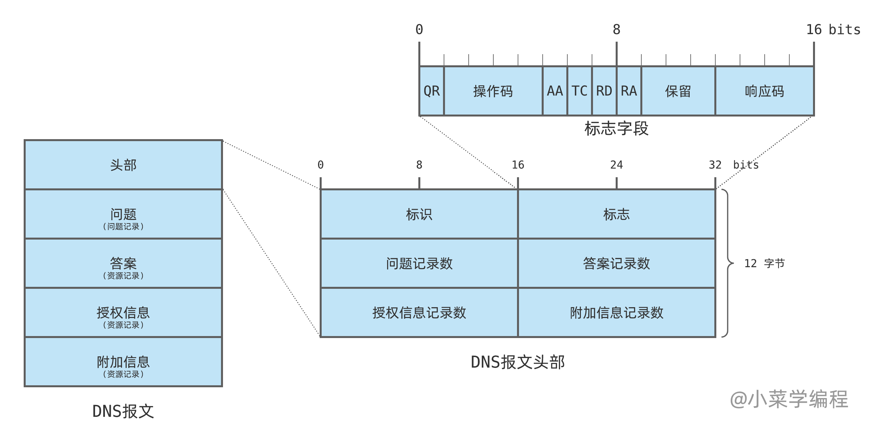
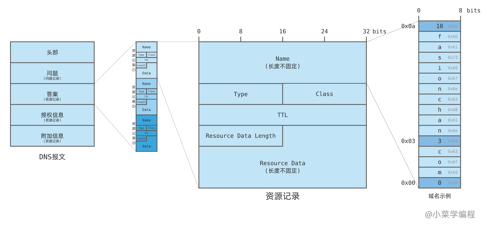
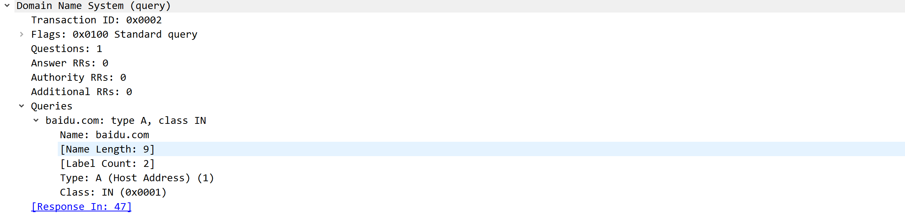
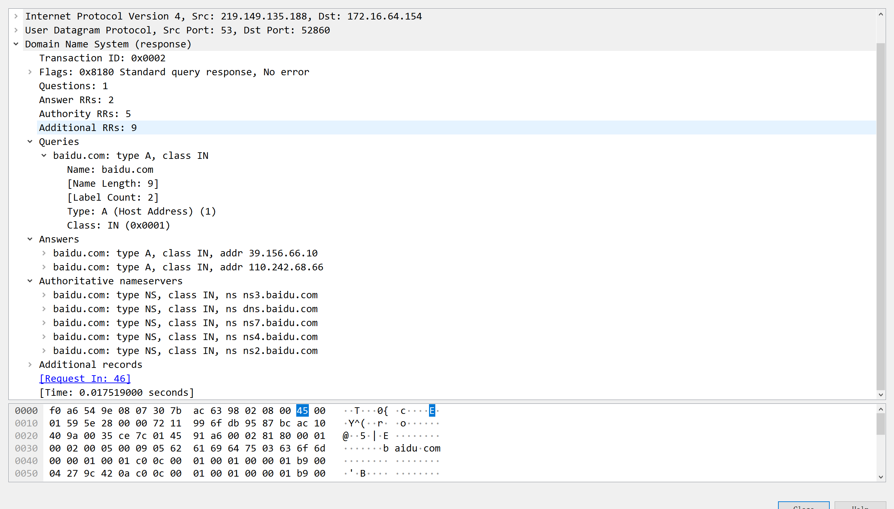
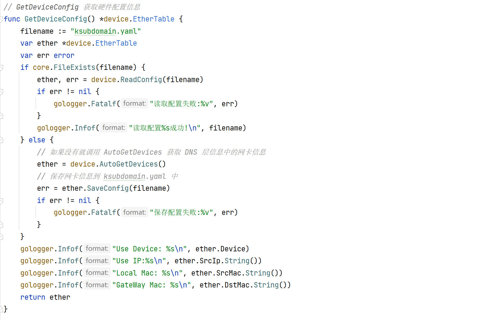
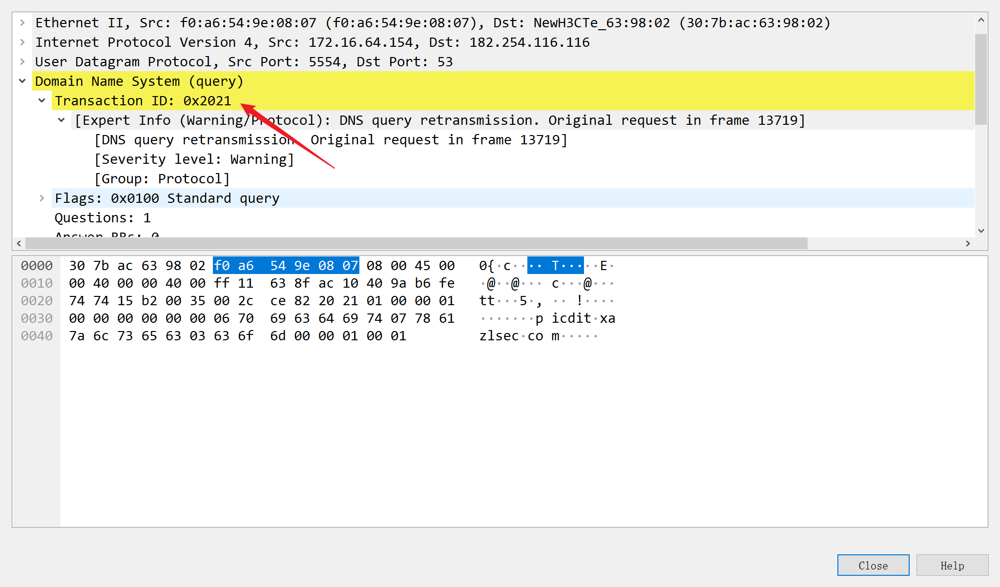

ksubdomain 源码学习
- date
- 2023-09-16 23:07:53
项目介绍
KSubdomain 是一款基于无状态技术的子域名爆破工具，带来前所未有的扫描速度和极低的内存占用。 告别传统工具的效率瓶颈，体验闪电般的 DNS 查询，同时拥有可靠的状态表重发机制，确保结果的完整性。 KSubdomain 支持 Windows、Linux 和 macOS，是进行大规模DNS资产探测的理想选择。
项目地址：https://github.com/boy-hack/ksubdomain
基础知识
无状态
无状态连接是指无需关系 TCP、UDP 协议状态，不占用系统协议栈资源，忘记 SYN、ACK、FIN、TIMEWIT，不进行会话组包。在实现上也有可能把必要的信息存放在数据包本身。如 masscan、zmp 都使用了这种无状态技术。
pcap
Pcap是 计算机 网络管理领域中一个用于 捕获网络流量的 应用程序接口（API）。其名称来源于“抓包”（英语：packet capture）（并非它的正确名称）。Pcap是用 C语言编写的。在 类Unix系统中libpcap 库实现了pcap；在 Microsoft Windows上，则由Npcap库移植了libpcap， Windows 7中可以使用WinPcap库的移植，但现已不再维护。
监控软件可以使用 pcap 来捕获在 计算机网络上传输的 网络数据包。
DNS协议
DNS 域名解析协议，它的作用就是将域名解析为 IP 地址。
报文格式
DNS 协议可以使用 UDP 或者 TCP 进行传输，使用的端口号都为 53，但大多数情况下 DNS 都使用 UDP 进行传输。
DNS 报文包括请求报文和应答报文，它们格式是相同的，如下所示：

报文头部
- 标识
(identifier)：一个 16 位的 ID ，在应答中原样返回，以此匹配请求和应答；
- 标志
(flags)：描述 DNS 报文的类别和工作特性，共 16 位；
- 问题记录数
(question count)：一个 16 位整数，表示问题节中的记录个数；
- 答案记录数
(answer count)：一个 16 位整数，表示答案节中的记录个数；
- 授权信息记录数
(authority record count) ：一个 16 位整数，表示授权信息节中的记录个数；
- 附加信息记录数
(additional record count) ：一个 16 位整数，表示附加信息节中的记录个数；
标志：
QR：用来区别请求和应答，0 表示请求报文，1 表示应答报文，占 1 位- 操作码
(Opcode)：用来定义操作类型，占 4 位
- 0 代表标准查询（ 正向解析 ）
- 1 代表反向查询（ 反向解析 ）
- 2 代表服务器状态请求
AA ： 权威回答(authoritative answer)，意味着当前查询结果是由域名的权威服务器给出的；TC ： 截短(truncated)，使用 UDP 时，如果应答超过 512 字节，只返回前 512 个字节；RD ：期望递归 (recursion desired)，在请求中设置，并在应答中返回；- 该位为 1 时，服务器必须处理这个请求：如果服务器没有授权回答，它必须替客户端请求其他 DNS 服务器，这也是所谓的 递归查询 ；
- 该位为 0 时，如果服务器没有授权回答，它就返回一个能够处理该查询的服务器列表给客户端，由客户端自己进行 迭代查询 ；
RA ：可递归 (recursion available)，如果服务器支持递归查询，就会在应答中设置该位，以告知客户端- 保留：这 3 位目前未用，留作未来扩展；
- 响应码
(response code)：占 4 位，表示请求结果，常见的值包括：
- 0 表示没有差错；
- 3 表示名字差错，该差错由权威服务器返回，表示待查询的域名不存在；
问题记录
DNS 报文数据部分由 4 个变长部分组成，请求报文中常常只有问题部分有内容，而其他 3 个部分的资源记录数为 0 。
DNS 问题部分由一组问题记录组成，包含如下内容：
- 待查询域名
(name)
- 查询类型
(type)
- 查询类别
(class)
查询类型：
| 查询类型 |
名称代码 |
描述 |
| 1 |
A |
IPv4地址 |
| 2 |
NS |
名称服务器 |
| 5 |
CNAME |
规范名称 |
| 15 |
MX |
电子邮件交互 |
| 16 |
TXT |
文本信息 |
| 28 |
AAAA |
IPv6地址 |
查询类别：取 1 时表示 Internet 协议
资源记录
服务端处理查询请求后，需要向客户端发送应答报文；域名查询结果作为资源记录，保存在答案以及其后两节中。

资源记录结构和问题记录非常相似，它总共有 6 个字段，前 3 个和问题记录完全一样：
- 被查询域名
- 查询类型
- 类
- 有效期
(TTL)：域名记录一般不会频繁改动，所以在有效期内可以将结果缓存起来，降低请求频率；
- 数据长度
(Resource Data Length)：即查询结果的长度；
- 数据
(Resource Data) ：即查询结果；
抓包分析
请求报文：问题这里就是 baidu.com 的 A 记录：

响应报文：

项目介绍
ksubdomain 使用 pcap 发包和接收数据，会直接将数据包发送至网卡，不经过系统，使速度大大提升。
由于又是 udp 协议，数据包丢失的情况很多，所以 ksubdomain 在程序中建立了“状态表”，用于检测数据包的状态，当数据包发送时，会记录下状态，当收到了这个数据包的回应时，会从状态表去除，如果一段时间发现数据包没有动作，便可以认为这个数据包已经丢失了，于是会进行重发，当重发到达一定次数时，就可以舍弃该数据包了。
上面说 ksubdomain 是无状态发包，如何建立确认状态呢？
根据 DNS 协议和 UDP 协议的一些特点，DNS 协议中 ID 字段，UDP 协议中 SrcPort 字段可以携带数据，在我们收到返回包时，这些字段的数据不会改变。所以利用这些字段的值来确认这个包是我们需要的，并且找到状态表中这个包的位置。
项目结构
| D:.
│ ksubdomain.yaml # 网卡配置信息
├─cmd # 命令参数相关
│ └─ksubdomain
│ cmd.go
│ enum.go # 枚举模式
│ test.go # 测试本地网卡的最大发送速度
│ verify.go # 验证模式
├─core
│ │ banner.go # Banner 信息
│ │ subdata.go # 子域名相关(内嵌,获取切片)
│ │ util.go # 工具类
│ │ wildcard.go # 泛解析域名判断
│ ├─device
│ │ device.go # 获取网卡信息,初始化 pcap
│ │ struct.go
│ ├─dns
│ │ ns.go # NS 记录
│ │ ns_test.go
│ ├─gologger
│ │ gologger.go # 日志
│ └─options
│ options.go # 配置信息及相关方法
└─runner
│ recv.go # 捕获数据包并获取其中的答案记录
│ result.go # 结果相关
│ retry.go # 超时重置机制
│ runner.go # 枚举主函数
│ send.go # 使用 gopacket 发送自定义的 DSN 数据包
│ testspeed.go # 测试本地网卡的最大发送速度
│ wildcard.go # 泛解析过滤
├─outputter # 输出相关
├─processbar # 过程(成功,失败...)
├─result # 结果结构体
└─statusdb # 使用 sync.Map 实现一个内存简易读写数据库
|
源码分析
枚举模块大致流程：
- 根据根域名及前缀拼接获取总子域名
- 通过请求域名然后捕获数据包提取本机的网卡信息
- 启动接收线程 ，启动发送线程 ，启动输出线程
- 向发送线程中传入总子域名目标
- 发送完成后启动重试机制的线程
- 然后就是一个死的
for 循环 + select...case，定时检测目标是否检测完成
- 检测完成，退出各个线程，关闭各通道
enum.go：
| // 获取网卡配置
opt.EtherInfo = options.GetDeviceConfig()
ctx := context.Background()
// 创建一个 runner
r, err := runner.New(opt)
if err != nil {
gologger.Fatalf("%s\n", err.Error())
return nil
}
// 启动枚举
r.RunEnumeration(ctx)
r.Close()
|
先看下获取网卡配置：

主要是 device.AutoGetDevices() ：
这个主要就是去使用 net.LookupHost(domain) 发起一个 DNS 请求，然后抓网卡包获取 DNS 数据包且问题为 domain 的，然后从它的 Ethernet 获取信息。
| func AutoGetDevices() *EtherTable {
domain := core.RandomStr(4) + ".i.hacking8.com"
signal := make(chan *EtherTable)
// 获取所有设备
devices, err := pcap.FindAllDevs()
if err != nil {
gologger.Fatalf("获取网络设备失败:%s\n", err.Error())
}
data := make(map[string]net.IP)
keys := []string{}
// 获取 ipv4 且不是回环地址的设备名称
for _, d := range devices {
for _, address := range d.Addresses {
ip := address.IP
if ip.To4() != nil && !ip.IsLoopback() {
data[d.Name] = ip
keys = append(keys, d.Name)
}
}
}
ctx := context.Background()
// 在初始上下文的基础上创建一个有取消功能的上下文
ctx, cancel := context.WithCancel(ctx)
for _, drviceName := range keys {
go func(drviceName string, domain string, ctx context.Context) {
var (
snapshot_len int32 = 1024
promiscuous bool = false
timeout time.Duration = -1 * time.Second
handle *pcap.Handle
)
var err error
// 使用 pcap.OpenLive 打开设备的抓包会话
handle, err = pcap.OpenLive(
drviceName, // 设备名
snapshot_len, // 捕获数据包的最大长度
promiscuous, // 不启用混杂模式 ( 只要发给自己的数据包 )
timeout, // 超时机制, -1 则一直等待重试
)
if err != nil {
gologger.Errorf("pcap打开失败:%s\n", err.Error())
return
}
defer handle.Close()
// Use the handle as a packet source to process all packets
// 创建一个数据包源，用于处理所有捕获到的数据包
packetSource := gopacket.NewPacketSource(handle, handle.LinkType())
for {
select {
case <-ctx.Done():
return
default:
// 获取一个数据包
packet, err := packetSource.NextPacket()
gologger.Printf(".")
if err != nil {
continue
}
// 检查数据包是否包含 DNS 层
if dnsLayer := packet.Layer(layers.LayerTypeDNS); dnsLayer != nil {
dns, _ := dnsLayer.(*layers.DNS)
// 判断是否为应答报文
if !dns.QR {
continue
}
for _, v := range dns.Questions {
if string(v.Name) == domain {
ethLayer := packet.Layer(layers.LayerTypeEthernet)
if ethLayer != nil {
eth := ethLayer.(*layers.Ethernet)
// 获取信息
etherTable := EtherTable{
SrcIp: data[drviceName],
Device: drviceName,
SrcMac: SelfMac(eth.DstMAC),
DstMac: SelfMac(eth.SrcMAC),
}
signal <- ðerTable
return
}
}
}
}
}
}
}(drviceName, domain, ctx)
}
for {
select {
// 获取配置信息后退出协程
case c := <-signal:
cancel()
fmt.Print("\n")
return c
default:
// 发起 DNS 请求, 从数据包中获取硬件信息
_, _ = net.LookupHost(domain)
time.Sleep(time.Second * 1)
}
}
}
|
runner.New(opt)：
| func New(opt *options.Options) (*runner, error) {
var err error
version := pcap.Version()
r := new(runner)
gologger.Infof(version + "\n")
r.options = opt
r.hm = statusdb.CreateMemoryDB()
gologger.Infof("Default DNS:%s\n", core.SliceToString(opt.Resolvers))
if len(opt.SpecialResolvers) > 0 {
var keys []string
for k, _ := range opt.SpecialResolvers {
keys = append(keys, k)
}
gologger.Infof("Special DNS:%s\n", core.SliceToString(keys))
}
// 打开 Pcap 捕获数据包
r.handle, err = device.PcapInit(opt.EtherInfo.Device)
if err != nil {
return nil, err
}
// 根据发包总数和 timeout 时间来分配每秒速度
allPacket := opt.DomainTotal
calcLimit := float64(allPacket/opt.TimeOut) * 0.85
if calcLimit < 5000 {
calcLimit = 5000
}
limit := int(math.Min(calcLimit, float64(opt.Rate)))
// 限制单位时间内允许通过的请求数目
r.limit = ratelimit.New(limit)
gologger.Infof("Domain Count:%d\n", r.options.DomainTotal)
gologger.Infof("Rate:%dpps\n", limit)
r.sender = make(chan string, 99) // 协程发送缓冲
r.recver = make(chan result.Result, 99) // 协程接收缓冲
// 获取一个空闲的端口
freePort, err := freeport.GetFreePort()
if err != nil {
return nil, err
}
// 获取 layers 类型
r.dnsType, err = options.DnsType(opt.DnsType)
if err != nil {
return nil, err
}
r.freeport = freePort
gologger.Infof("FreePort:%d\n", freePort)
r.dnsid = 0x2021 // set dnsid 65500
r.maxRetry = opt.Retry
r.timeout = int64(opt.TimeOut)
r.fisrtloadChanel = make(chan string)
r.startTime = time.Now()
return r, nil
}
|
然后就是一个 RunEnumeration：
| func (r *runner) RunEnumeration(ctx context.Context) {
ctx, cancel := context.WithCancel(ctx)
defer cancel()
go r.recvChanel(ctx) // 启动接收线程
go r.sendCycle() // 启动发送线程
go r.handleResult() // 处理结果，打印输出
go func() {
// 向发送线程中传入目标域名
for domain := range r.options.Domain {
r.sender <- domain
}
r.fisrtloadChanel <- "ok"
}()
var isLoadOver bool = false
// 1s 定时器
t := time.NewTicker(1 * time.Second)
defer t.Stop()
// 等待协程运行完成
for {
select {
// 每秒都发送一次, 判断是否完成
// 完成之后 return 出 for 循环, defer cancel() 退出接收协程
case <-t.C:
r.printStatus()
if isLoadOver {
if r.hm.Length() <= 0 {
gologger.Printf("\n")
gologger.Infof("扫描完毕")
return
}
}
// 目标域名发送完成后就开始进行重试测试
case <-r.fisrtloadChanel:
go r.retry(ctx)
isLoadOver = true
// 程序结束
case <-ctx.Done():
return
}
}
}
|
sendCycle()，
| func (r *runner) sendCycle() {
for domain := range r.sender {
// 启动速率限制
r.limit.Take()
// 判断是否为重试的目标
v, ok := r.hm.Get(domain)
if !ok {
v = statusdb.Item{
Domain: domain,
// 获取一个随机的 DNS 服务器地址, 或者根据域名获取特殊的 DNS 服务器地址
Dns: r.choseDns(domain),
Time: time.Now(),
Retry: 0,
DomainLevel: 0,
}
r.hm.Add(domain, v)
} else {
// 重试次数 +1
v.Retry += 1
v.Time = time.Now()
v.Dns = r.choseDns(domain)
r.hm.Set(domain, v)
}
// 发送操作
send(domain, v.Dns, r.options.EtherInfo, r.dnsid, uint16(r.freeport), r.handle, r.dnsType)
// 并发安全的计数器 +1
atomic.AddUint64(&r.sendIndex, 1)
}
}
|
看一下 send 使用pacp 网卡进行发包：
其实就是模拟一个 DNS 协议的包，然后在 DNS 的 ID 字段携带一个标识，这个就是用来区分是否为 Ksubdomain 发送的请求包。
| // send 使用 gopacket 去发送数据包
func send(domain string, dnsname string, ether *device.EtherTable, dnsid uint16, freeport uint16, handle *pcap.Handle, dnsType layers.DNSType) {
// dns 服务器地址
DstIp := net.ParseIP(dnsname).To4()
eth := &layers.Ethernet{
SrcMAC: ether.SrcMac.HardwareAddr(),
DstMAC: ether.DstMac.HardwareAddr(),
EthernetType: layers.EthernetTypeIPv4,
}
// Our IPv4 header
ip := &layers.IPv4{
Version: 4,
IHL: 5,
TOS: 0,
Length: 0, // FIX
Id: 0,
Flags: layers.IPv4DontFragment,
FragOffset: 0,
TTL: 255,
Protocol: layers.IPProtocolUDP,
Checksum: 0,
SrcIP: ether.SrcIp,
DstIP: DstIp,
}
// Our UDP header
udp := &layers.UDP{
SrcPort: layers.UDPPort(freeport),
DstPort: layers.UDPPort(53),
}
// Our DNS header
dns := &layers.DNS{
// Ksubdomain 的标识 0x2021
ID: dnsid,
QDCount: 1,
RD: true, //递归查询标识
}
dns.Questions = append(dns.Questions,
layers.DNSQuestion{
Name: []byte(domain),
Type: dnsType,
Class: layers.DNSClassIN,
})
// Our UDP header
_ = udp.SetNetworkLayerForChecksum(ip)
buf := gopacket.NewSerializeBuffer()
// 把所有层序列化到缓冲区中
err := gopacket.SerializeLayers(
buf,
gopacket.SerializeOptions{
ComputeChecksums: true, // automatically compute checksums
FixLengths: true,
},
eth, ip, udp, dns,
)
if err != nil {
gologger.Warningf("SerializeLayers faild:%s\n", err.Error())
}
// 发送
err = handle.WritePacketData(buf.Bytes())
if err != nil {
gologger.Warningf("WritePacketDate error:%s\n", err.Error())
}
}
|
看一下接收操作：
| func (r *runner) recvChanel(ctx context.Context) error {
var (
snapshotLen = 65536
timeout = -1 * time.Second
err error
)
// 创建一个 pcap 句柄
inactive, err := pcap.NewInactiveHandle(r.options.EtherInfo.Device)
if err != nil {
return err
}
err = inactive.SetSnapLen(snapshotLen)
if err != nil {
return err
}
defer inactive.CleanUp()
if err = inactive.SetTimeout(timeout); err != nil {
return err
}
err = inactive.SetImmediateMode(true)
if err != nil {
return err
}
// 启动开始监听抓包
handle, err := inactive.Activate()
if err != nil {
return err
}
defer handle.Close()
// 设置过滤器
err = handle.SetBPFFilter(fmt.Sprintf("udp and src port 53 and dst port %d", r.freeport))
if err != nil {
return errors.New(fmt.Sprintf("SetBPFFilter Faild:%s", err.Error()))
}
// Listening
var udp layers.UDP
var dns layers.DNS
var eth layers.Ethernet
var ipv4 layers.IPv4
var ipv6 layers.IPv6
// 解码器
parser := gopacket.NewDecodingLayerParser(
layers.LayerTypeEthernet, ð, &ipv4, &ipv6, &udp, &dns)
var data []byte
var decoded []gopacket.LayerType
for {
select {
case <-ctx.Done():
return nil
default:
data, _, err = handle.ReadPacketData()
if err != nil {
continue
}
err = parser.DecodeLayers(data, &decoded)
if err != nil {
continue
}
// 是否为应答报文
if !dns.QR {
continue
}
// 是否为 Ksubdomain 发送的数据包
if dns.ID != r.dnsid {
continue
}
// DNS 请求成功计数器 +1
atomic.AddUint64(&r.recvIndex, 1)
if len(dns.Questions) == 0 {
continue
}
// 获取可解析的子域名
subdomain := string(dns.Questions[0].Name)
// 从 Map 中删除, 这里就证明了 DNS 请求成功, 但不能确定是否可解析
r.hm.Del(subdomain)
// 看是否有答案返回, 有说明是可解析的, 也就是一个存在的域名
if dns.ANCount > 0 {
// 成功的计数器 +1
atomic.AddUint64(&r.successIndex, 1)
var answers []string
for _, v := range dns.Answers {
// 获取答案记录值, A,AAA...
answer, err := dnsRecord2String(v)
if err != nil {
continue
}
answers = append(answers, answer)
}
// 放入结果通道
r.recver <- result.Result{
Subdomain: subdomain,
Answers: answers,
}
}
}
}
}
|
这里抓下包，这个 ID 就是 "无状态" 模式下，确定是 Ksubdomain 的方法：

再看一下重试机制：
当目标域名发送完成后就开启重试协程：
| func (r *runner) retry(ctx context.Context) {
t := time.NewTicker(1 * time.Second)
defer t.Stop()
for {
select {
case <-ctx.Done():
return
case <-t.C:
now := time.Now()
r.hm.Scan(func(key string, v statusdb.Item) error {
// 当前重试次数 > 0 且 当前重试次数 > 最大重试次数
if r.maxRetry > 0 && v.Retry > r.maxRetry {
r.hm.Del(key)
atomic.AddUint64(&r.faildIndex, 1)
return nil
}
// 数据包发送的时间和当前时间是否超过指定的超时时间
if int64(now.Sub(v.Time)) >= r.timeout {
// 重新发送
r.sender <- key
}
return nil
})
}
}
}
|
这个 Scan 就是去遍历每一个键值对，然后去进行重试方面的测试：
| func (r *StatusDb) Scan(f func(key string, value Item) error) {
r.Items.Range(func(key, value interface{}) bool {
k := key.(string)
item := value.(Item)
f(k, item)
return true
})
}
|
然后就是 defer cancel()，关闭各种管道啥的

学习总结
大概看了一遍代码后学习到了不少东西：
strings.Builder 构建字符串Printf 中使用 \r 实现类动态更新//go:embed file 内嵌文件到变量中sync.Map 的使用atomic.AddUint64(&r.recvIndex, 1) 并发安全的计数器操作- 多个协程之间使用管道进行数据传递且通过
死循环 + 多路复用 + 上下文 + time.NewTicker 控制协程退出
参考链接
{kind=link}
{kind=link}
{kind=link}
{kind=link}
{kind=link}
{kind=link}